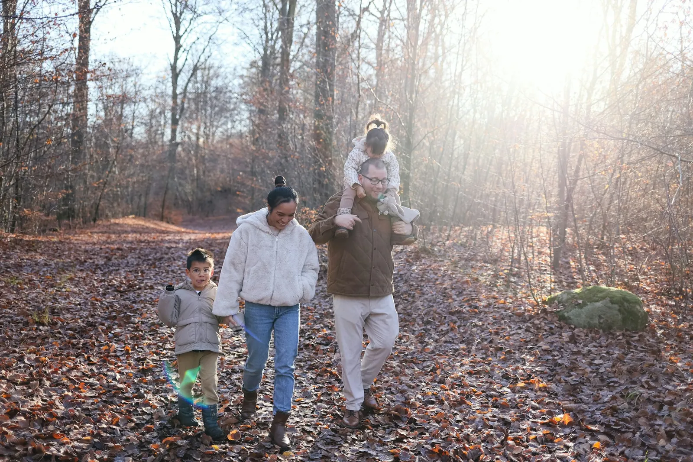
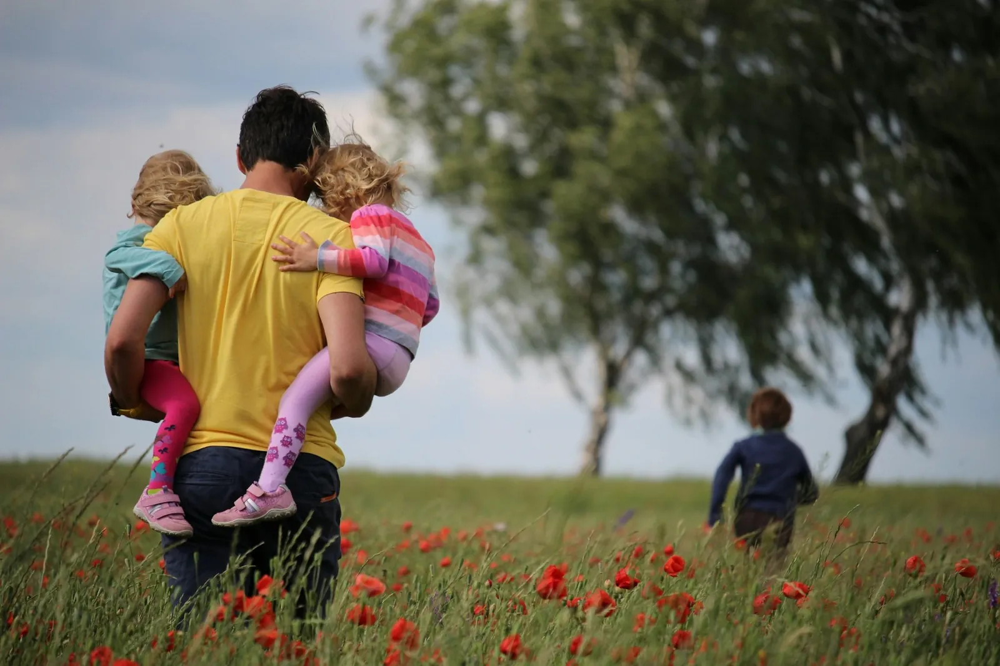

Rechtsdomeinen
Waarvoor u bij mij terechtkunt.

Familierecht
Scheiden, het verblijf van de kinderen, onderhoudsgeld en afspraken die ook over een paar jaar nog werken.
Hierover een gesprek
Familiaal vermogensrecht
Wat is van wie? Huwelijkscontracten, de verdeling van de woning en van spaargeld, ook na een overlijden.
Hierover een gesprek
Personenrecht
Afstamming, naam, bewindvoering en alles wat te maken heeft met uw rechten als persoon.
Hierover een gesprek
Goederenrecht
Eigendom, mede-eigendom en geschillen over een huis, een grond of andere goederen.
Hierover een gesprek